Низкооборотный трехфазный электрогенератор с дисковым ротором на постоянных магнитах (16 полюсов, 12 обмоток)
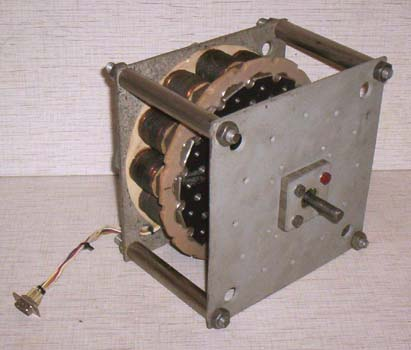
1. Введение
При использовании низкооборотных приводов, ось которых напрямую соединена с осью электрического генератора, возникает проблема получения достаточно высокого выходного напряжения и электрической мощности. Один из способов ее решения - многополюсный электрогенератор с ротором на постоянных магнитах. Электрогенератор с ротором на постоянных магнитах не имеет коллектора и щеток, что позволяет существенно повысить его надежность и время работы без обслуживания и ремонта. Применение постоянных магнитов с высокими значениями остаточной индукции и коэрцитивной силы позволяет существенно улучшить электрические характеристики генератора или уменьшить его габариты.
Электрогенератор с ротором на постоянных магнитах может быть построен по различным схемам, отличающимся друг от друга совместным расположением обмоток и магнитов. Магниты с чередующейся полярностью располагаются на роторе генератора. Обмотки с чередующимся направлением намотки располагаются на статоре генератора. Если ротор и статор представляют из себя соосные диски, то такой тип генератора назовем аксиальным или дисковым (рис. 1.1). Возможны различные модификации дискового генератора, когда, например, магниты на немагнитном диске располагаются между двумя дисками с обмотками (рис. 1.2) или немагнитный диск с обмотками располагается между двумя дисками с магнитами (рис. 1.3).
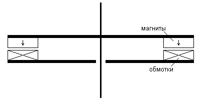
Рис. 1.1. Схема электрогенератора с ротором на постоянных магнитах аксиального (дискового) типа.
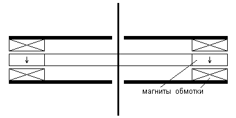
Рис. 1.2. Схема электрогенератора с ротором на постоянных магнитах аксиального (дискового) типа (вариант с магнитами между обмотками).
Рис. 1.3. Схема электрогенератора с ротором на постоянных магнитах аксиального (дискового) типа (вариант с обмотками между магнитами).
Если ротор и статор представляют из себя коаксиальные соосные цилиндры, то такой тип генератора назовем радиальным или цилиндрическим (рис. 1.4). В генераторе радиального типа ротор может быть внутренним (рис. 1.4) или внешним (рис. 1.5) по отношению к статору. Или же обмотки могут быть расположены между двумя цилиндрическими магнитопроводами с магнитами (рис. 1.6).

Рис. 1.4. Схема электрогенератора радиального (цилиндрического) типа с внутренним ротором на постоянных магнитах.

Рис. 1.5. Схема электрогенератора радиального (цилиндрического) типа с внешним ротором на постоянных магнитах.

Рис. 1.6. Схема электрогенератора радиального (цилиндрического) типа с обмотками, расположенными между двумя роторами с постоянными магнитами.
Если число обмоток равно числу магнитных полюсов, то при прохождении магнитного полюса мимо сердечника обмотки за счет сил притяжения возникает скачок момента на валу ("залипание" ротора). Для ослабления этого эффекта в однофазном генераторе можно увеличить или уменьшить число обмоток (m) на единицу или на два по сравнению с числом магнитов (n) (см. таблицу 1.1). Например, в простейшем случае число магнитных полюсов может быть равно двум, а число обмоток - трем (рис. 1.7), причем выводы обмоток соединяются последовательно (данный генератор можно также рассматривать как трехфазный). Подобное решение использовано в конструкции 6-полюсных генераторов [1] (число полюсов магнита n = 6, число обмоток m = 7) и [8] (число полюсов магнита n = 6, число обмоток в каждой из двух групп m = 5, дополнительно группы обмоток сдвинуты друг относительно друга на угол в 36 градусов), а также 18-полюсного генератора [11] (число полюсов (магнитов) n = 18, число обмоток m = 19). Возможны и другие соотношения между числом магнитных полюсов и обмоток. Можно вообще отказаться от применения стальных сердечников в обмотках, тогда при любом положении ротора скачков момента на валу в режиме холостого хода не будет. Число обмоток может быть при этом равно числу магнитов. Но такое решение, как правило, приводит к снижению выходной мощности генератора при тех же габаритах. Уменьшить эффект "залипания" ротора позволяет также трехфазная схема генератора (рис. 1.7). При ее построении число магнитов (полюсов) может быть кратно двум, а число обмоток - трем с тем же коэффициентом или вдвое меньшим (см. таблицу 1.2). Выводы обмоток могут соединяться звездой или треугольником.
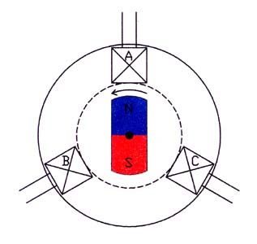
Рис. 1.7. Устройство простейшего электрогенератора.
Таблица 1.1. Пример соотношения между числом магнитных полюсов и числом обмоток для однофазного электрогенератора.
| Число полюсов, n | 2 | 4 | 6 | 8 | 10 | 12 | 14 | 16 | 18 |
| Число обмоток, m = n -1 | - | 3 | 5 | 7 | 9 | 11 | 13 | 15 | 17 |
| Число обмоток, m = n + 1 | 3 | 5 | 7 | 9 | 11 | 13 | 15 | 17 | 19 |
| Число обмоток, m = n - 2 | - | - | 4 | 6 | 8 | 10 | 12 | 14 | 16 |
| Число обмоток, m = n + 2 | - | 6 | 8 | 10 | 12 | 14 | 16 | 18 | 20 |
Таблица 1.2. Пример соотношения между числом магнитных полюсов и числом обмоток для трехфазного электрогенератора.
| Число полюсов, n | 2 | 4 | 6 | 8 | 10 | 12 | 14 | 16 | 18 |
| Число обмоток, m = 3 · n / 2 | 3 | 6 | 9 | 12 | 15 | 18 | 21 | 24 | 27 |
| Число обмоток, m = 3 ∙ n / 4 | - | 3 | - | 6 | - | 9 | - | 12 | - |
2. Конструкция трехфазного электрогенератора
Трехфазный электрогенератор, внешний вид которого показан на рис. 2.4, собран по схеме рис. 1.1. Эскиз конструкции приведен на рис. 2.1. Использование цилиндрических форм катушек и постоянных магнитов в электрогенераторах менее эффективно, чем, например, в виде секторов, но привлекает доступностью цилиндрических постоянных магнитов.

Рис. 2.1. Эскиз трехфазного электрогенератора (поперечный разрез).
Статор генератора состоит из двух квадратных стальных пластин, разделенных распорками и стянутых шпильками. На нижней пластине расположены по окружности катушки в виде цилиндрических соленоидов со стальными сердечниками (12 штук, рис. 2.2). В качестве сердечников катушек использованы болты М20. Применение сердечников из сплошной малоуглеродистой стали в данном случае оправдано невысокой частотой оборотов ротора и, как следствие, низкой частотой выходного напряжения (менее 20 Гц). Кроме того, подобное решение подкупает простотой и дешевизной. В центре пластин статора закреплены подшипники, через которые пропущена ось ротора. Ротор представляет из себя укрепленный на оси стальной диск, к которому с использованием центрующей немагнитной накладки крепятся постоянные магниты (16 штук, рис. 2.3) с чередующимся направлением намагниченности. Магниты представляют из себя аксиально намагниченные диски состава неодим-железо-бор типоразмера Д25х5. Намагничивание магнитов производилось в установке намагничивания [16]. Расчет катушек генератора выполнен с помощью программы Coil [3]. Катушки каждой фазы генератора соединены между собой последовательно (рис. 2.5). Для проверки правильности фазировки катушек и качества их намотки можно использовать следующий прием. С генератора снимается ротор. Выводы фазы генератора подключаются к источнику постоянного тока напряжением до 12 вольт [5, 6]. С помощью тесламетра [12] производится контроль магнитной индукции на сердечниках катушек. Направление магнитной индукции должно быть одинаковым для всех катушек одной фазы. Величина магнитной индукции на поверхности сердечников всех катушек должна быть примерно одинаковой. Внутренняя коммутация катушек генератора, а также вариант их соединения звездой и схема подключения к трехфазному мостовому диодному выпрямителю с нагрузкой показана на рис. 2.5.

Рис. 2.2. Схема расположения катушек на статоре трехфазного генератора.

Рис. 2.3. Схема расположения магнитов на роторе трехфазного генератора. Магниты устанавливаются с использованием немагнитной центрующей накладки на стальном диске с чередующейся полярностью.
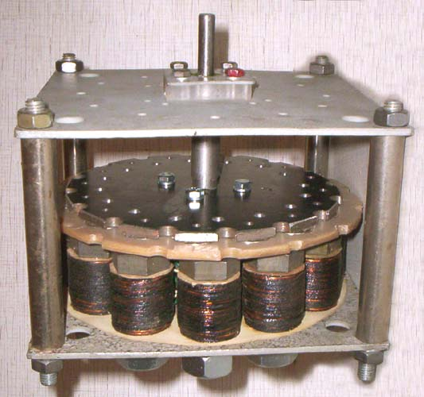
Рис. 2.4. Внешний вид трехфазного электрогенератора.
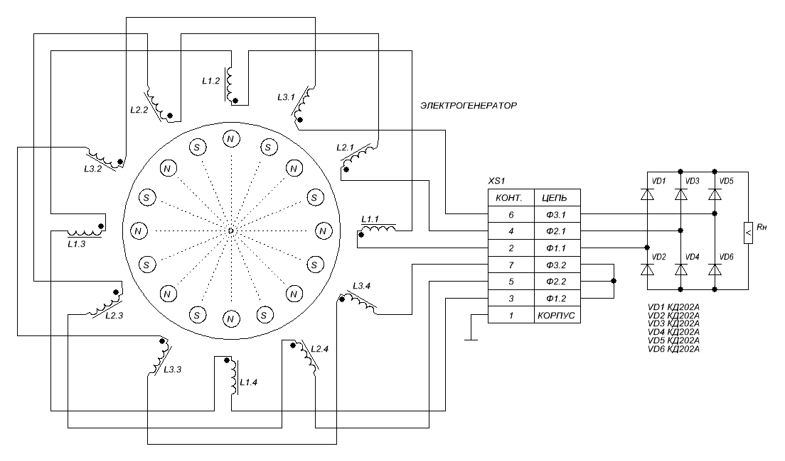
Рис. 2.5. Внутренняя коммутация обмоток трехфазного электрогенератора. Схема включения обмоток генератора звездой и подключения к нагрузке через трехфазный мостовой диодный выпрямитель.
3. Технические характеристики трехфазного электрогенератора:
Электрические характеристики генератора достаточно хорошо соответствуют расчетным.
4. Расчеты трехфазного электрогенератора
Расчет магнитной системы трехфазного электрогенератора произведен методом конечных элементов [13] с помощью программы Ansoft Maxwell [2]. На рис. 4.1 показана расчетная трехмерная модель магнитной системы электрогенератора.
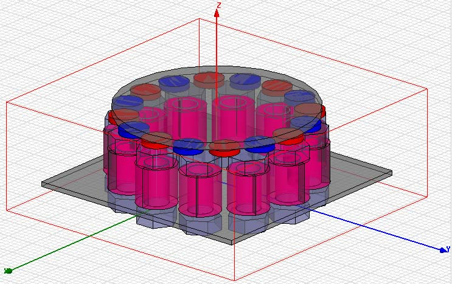
Рис. 4.1. Трехмерная расчетная модель магнитной системы трехфазного электрогенератора в программе Ansoft Maxwell [2]. Шаг сетки 5 мм. Стальные детали показаны серым цветом, постоянные магниты - красным и синим, обмотки - малиновым.
Стальные детали электрогенератора изготовлены из малоуглеродистой стали, магнитные свойства которой представлены на рис. 4.2.

Рис. 4.2. Кривая намагничивания малоуглеродистой стали, использованной при изготовлении трехфазного электрогенератора.
В электрогенераторе использованы цилиндрические постоянные магниты состава Nd-Fe-B типоразмера Д25 х 5 (на рис. 4.1 изображены красным и синим цветом) со следующими магнитными свойствами: остаточная индукция 1.1 Тл, коэрцитивная сила по намагниченности 850 кА/м. Постоянные магниты намагничены аксиально в установке импульсного намагничивания [16], контроль качества намагничивания производился с помощью тесламетра [12]. Ток в обмотках генератора предполагается равным нулю (реакция якоря отсутствует). На рис.4.3 показана зависимость величины магнитной индукции на оси сердечника катушки от расстояния от основания электрогенератора. Среднее расчетное значение магнитной индукции в сердечнике катушки 0.657 Тл.
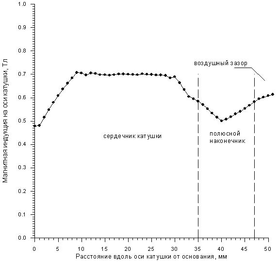
Рис. 4.3. Магнитная индукция на оси сердечника катушки электрогенератора при максимальном потокосцеплении и нулевом токе в катушке. Магнитная индукция в воздушном зазоре между магнитом и полюсным наконечником катушки 0.6 Тл (среднее расчетное значение) соответствует измеренной 0.603 Тл (среднее измеренное значение). Среднее расчетное значение магнитной индукции в сердечнике катушки 0.657 Тл.
Рассчитанное значение магнитной индукции в воздушном зазоре 0.6 Тл (рис. 4.3) практически равно измеренному с помощью тесламетра [12] (0.603 Тл - усредненное измеренное значение по всем полюсам и всем катушкам). Таким образом, можно сделать вывод, что расчетная модель достаточно хорошо соответствует реальной конструкции. Среднее расчетное значение магнитной индукции в сердечнике катушки на длине 35 мм B0 ≈ 0.657 Тл.
Индуктивность фаз при последовательном включении четырех катушек в каждой фазе рассчитывалась в предположении, что ток фазы составляет 0.5 А, т. е. магнитодвижущая сила (МДС) каждой катушки, содержащей 400 витков, равна 200 А ∙ витков. При этом предположении рассчитанная индуктивность фаз составила 246, 240, 245 мГн, соответственно.
Для дальнейшего расчета параметров электрогенератора (число витков одной катушки, активное сопротивление одной фазы, действующее напряжение холостого хода одной фазы) может быть использована методика, изложенная в описании программы PM_Generator [4]. Эскиз цилиндрической катушки (цилиндрического соленоида) электрогенератора представлен на рис. 4.4.
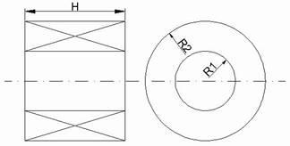
Рис. 4.4. Геометрические параметры цилиндрического соленоида: R1 - радиус отверстия, R2 - внешний радиус, H - высота.
Число витков N обмотки цилиндрического соленоида может быть найдено по формуле:

где l – фактор упаковки, D – диаметр обмоточного провода.
В трехфазном
электрогенераторе:
R1 = 10 мм
R2 = 17.5
мм
H = 35 мм
D = 0.7 мм
l
= 0.6
Активное сопротивление R цилиндрического соленоида:

где rE – удельное электрическое сопротивление обмоточного провода. Если m катушек одной фазы генератора соединены последовательно, то внутреннее сопротивление фазы генератора RIN может быть найдено следующим образом:

В трехфазном
электрогенераторе:
R1 = 10 мм
R2 = 17.5
мм
H = 35 мм
D = 0.7 мм
l
= 0.6
m = 4
rE
= 1.67 ∙
10-8 Ом
∙ м
В соответствии с законом электромагнитной индукции Фарадея [10] под действием переменного магнитного поля в обмотке (катушке) возникает электродвижущая сила (ЭДС) EC. Она равна сумме ЭДС отдельных витков и определяется выражением:
где N – число витков обмотки (катушки), t – время, Fi – магнитный поток, пронизывающий площадь, охватываемую i-м витком и Y – потокосцепление обмотки с магнитным полем:
Полагая, что потокосцепление изменяется по гармоническому закону:

где Y0 – максимальное потокосцепление магнита и обмотки, n – число полюсов ротора, F – частота вращения ротора (оборотов в секунду), получим:
Если число катушек одной фазы генератора равно m, то ЭДС одной фазы генератора E при их последовательном соединении (с учетом фазировки и при отсутствии фазовых сдвигов потокосцепления катушек одной фазы с магнитными полюсами ротора):

Амплитуда ЭДС одной фазы генератора E0:
Действующее выходное напряжение одной фазы генератора при отсутствии нагрузки UXX (напряжение холостого хода):
При использовании в катушке ферромагнитного сердечника магнитное поле будет в основном сосредоточено в нем и распределено равномерно, если не учитывать вихревые токи. Амплитуда потокосцепления катушки и создаваемого системой постоянных магнитов магнитного поля Y0 (момент, когда катушка находится точно между полюсами) определяется посредством формулы:

где N – число витков обмотки, S – площадь сердечника, B0 – индукция магнитного поля в сердечнике. С учетом:

и
получаем:
В трехфазном
электрогенераторе:
R1 = 10 мм
R2 = 17.5
мм
H = 35 мм
D = 0.7 мм
l
= 0.6
n = 16
m = 4
B0 = 0.657
Тл
При
частоте вращения F = 1 об./с:
Результаты измерений напряжения холостого хода приведены на рис. 4.5 - 4.6. Измерения проводились с помощью осциллографа UTD2102CEL-R. При их проведении реальная частота вращения ротора отличалась от расчетной (1 об./с). Действующее выходное напряжение холостого хода было пересчитано на частоту вращения 1 об./с с учетом того, что оно прямопропорционально частоте вращения ротора.
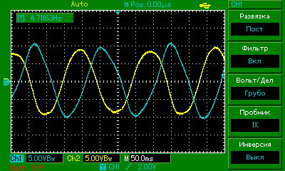
Рис. 4.5. Выходное напряжение холостого хода двух фаз трехфазного электрогенератора (три фазы соединены звездой). Частота выходного напряжения примерно 5.22 Гц. Частота вращения ротора примерно 0.65 об./с. Средняя амплитуда выходного напряжения холостого хода примерно 9 В, действующее значение напряжения холостого хода одной фазы 6.36 В. В пересчете на частоту вращения ротора 1 об./с действующее напряжение составит 9.8 В.
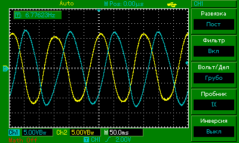
Рис. 4.6. Выходное напряжение холостого хода двух фаз трехфазного электрогенератора (три фазы соединены звездой). Частота выходного напряжения примерно 6.82 Гц. Частота вращения ротора примерно 0.85 об./с. Средняя амплитуда выходного напряжения холостого хода примерно 12 В, действующее значение напряжения холостого хода одной фазы 8.49 В. В пересчете на частоту вращения ротора 1 об./с действующее напряжение составит 10.0 В.
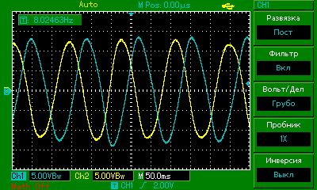
Рис. 4.7. Выходное напряжение холостого хода двух фаз трехфазного электрогенератора (три фазы соединены звездой). Частота выходного напряжения примерно 7.41 Гц. Частота вращения ротора примерно 0.93 об./с. Средняя амплитуда выходного напряжения холостого хода примерно 13 В, действующее значение напряжения холостого хода одной фазы 9.19 В. В пересчете на частоту вращения ротора 1 об./с действующее напряжение составит 9.9 В.
Результаты проведенных расчетов и измерений представлены в таблице 4.1.
Таблица 4.1. Соответствие рассчитанных и измеренных параметров электрогенератора.
| Параметр | Рассчитанное значение | Измеренное значение |
| Число витков одной катушки | ≈409 | 400 |
| Внутреннее активное сопротивление одной фазы Rin, Ом | 6.137 | 7.1 |
| Индуктивность одной фазы на частоте, близкой к нулю, мГн | 240 ... 246 | 185 ... 225 |
| ЭДС одной фазы Uxx, В (частота вращения ротора 1 об./с) | 12 | 9.9 |
Соответствие измеренных и рассчитанных значений приемлемое с учетом того, что сердечник катушки имеет диаметр, несколько меньший чем принято в расчетах, кроме того, за счет вихревых токов его эффективное сечение дополнительно уменьшается. Удельное сопротивление обмоточного провода, как правило, несколько больше справочного значения для меди (1.67 ∙ 10-8 Ом ∙ м [14]) из-за наличия примесей.
5. Испытания трехфазного электрогенератора
Активное сопротивление фаз генератора при последовательном включении обмоток измерено мультиметром APPA-107N и составило: 7.15 + 0.05 Ом, 7.08 + 0.05 Ом, 7.06 + 0.05 Ом.
Индуктивность фаз трехфазного электрогенератора была измерена на переменном токе методом амперметра-вольтметра (рис. 5.1) на частотах 2, 5 и 10 Гц. Последовательно соединенные катушки фазы L подключались к выходу усилителя мощности низкой частоты [15] через балластный резистор R1.1R1.2 сопротивлением 10 Ом (точная подстройка осуществлялась с помощью переменного резистора R1.2). На вход усилителя мощности подавался сигнал с выхода генератора Г3-118. С помощью первого канала осциллографа UTD2102CEL-R измерялась амплитуда напряжения на балластном резисторе R1.1R1.2. По ней рассчитывалась амплитуда тока I0 через обмотки фазы L. Амплитудное значение напряжения на выводах фазы U0 измерялось с помощью второго канала осциллографа. Полное сопротивление фазы ZL рассчитывалось как отношение амплитудных значений напряжения на фазе и тока через нее, а далее по известному активному сопротивлению R находилась ее индуктивность L с использованием формул:


Рис. 5.1. Схема для измерения индуктивности на переменном токе методом амперметра-вольтметра.
В таблице 5.1 приведены значения измеренной на частотах 2, 5, 10 Гц индуктивности разных фаз трехфазного электрогенератора.
Таблица 5.1. Индуктивность разных фаз трехфазного электрогенератора, измеренная на разных частотах.
|
|
Частота f, Гц |
|||
|
2 |
5 |
10 |
||
|
Фаза A |
I0, А |
0.1 |
0.1 |
0.1 |
|
U0 , В |
0.75 |
0.9 |
1.3 |
|
|
ZL, Ом |
7.5 |
9.0 |
13.0 |
|
|
R, Ом |
7.15 |
7.15 |
7.15 |
|
|
L, мГн |
180 |
174 |
173 |
|
|
Фаза B |
I0, А |
0.1 |
0.1 |
0.1 |
|
U0 , В |
0.75 |
0.9 |
1.3 |
|
|
ZL, Ом |
7.5 |
9.0 |
13.0 |
|
|
R, Ом |
7.08 |
7.08 |
7.08 |
|
|
L, мГн |
197 |
177 |
174 |
|
|
Фаза C |
I0, А |
0.1 |
0.1 |
0.1 |
|
U0 , В |
0.75 |
0.9 |
1.3 |
|
|
ZL, Ом |
7.5 |
9.0 |
13.0 |
|
|
R, Ом |
7.06 |
7.06 |
7.06 |
|
|
L, мГн |
201 |
178 |
174 |
|
На рис. 5.2 показан график зависимости индуктивности от частоты измерений. С увеличением частоты измерительного напряжения индуктивность уменьшается и наоборот. Сплошными линиями показаны полиномиальные аппроксимации (степени 2) измеренной индуктивности, которые на нулевой частоте дают оценку индуктивности в диапазоне 185 ... 225 мГн для разных фаз (в среднем примерно 200 мГн, что достаточно хорошо согласуется с расчетами, см. таблицу 4.1).

Рис. 5.2. Зависимость индуктивности фаз трехфазного электрогенератора, измеренной методом амперметра-вольтметра, от частоты измерительного напряжения.
При частоте вращения ротора 2 об./с частота выходного напряжения составит 16 Гц. На этой частоте индуктивное сопротивление фазы с индуктивностью около 180 мГн составит примерно 18 Ом, что почти в два с половиной раза больше, чем ее активное сопротивление (примерно 7.1 Ом). Если в начальный момент времени магнитные полюса ротора находятся напротив полюсных наконечников катушек фазы, то потокосцепление изменяется по косинусоидальному закону:

а ЭДС фазы - по синусоидальному:

Если фаза генератора подключена к активной нагрузке (рис. 5.3), то фазовый ток будет изменяться по закону:

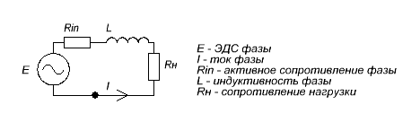
Рис. 5.3. Схема подключения фазы электрогенератора к активной нагрузке.
На рис. 5.4 показаны нормализованные графики изменения потокосцепления, ЭДС и тока фазы во времени: частота ЭДС 16 Гц, активное внутреннее сопротивление фазы 7.1 Ом, индуктивность фазы 180 мГн, сопротивление нагрузки 7 Ом. Фазовый сдвиг между ЭДС и током при этом составляет примерно 520. Если сопротивление нагрузки будет стремиться к нулю, то фазовый сдвиг между ЭДС и током будет возрастать примерно до 690. Из рис. 5.4 видно, что ток находится почти в противофазе относительно потокосцепления, то есть создает магнитное поле, направленное противоположно полю, генерируемому магнитами ротора, тем самым уменьшая магнитную индукцию в сердечнике катушки и, соответственно, ЭДС (реакция якоря).
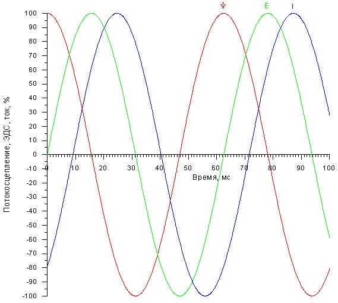
Рис. 5.4. Изменение потокосцепления, ЭДС и тока фазы во времени при подключенной активной нагрузке (потокосцепление - красная линия, ЭДС - зеленая линия, ток - синяя линия).
Для снятия зависимости выходного напряжения электрогенератора от частоты вращения ротора при разных нагрузках был использован испытательный стенд [7] с электроприводом, частота вращения которого может плавно регулироваться (рис. 5.5).

Рис. 5.5. Испытательный стенд [7] с установленным во внутреннем отсеке трехфазным генератором с дисковым ротором на постоянных магнитах для снятия зависимости выходного напряжения электрогенератора от частоты вращения ротора при разных нагрузках.
Электрогенератор крепится во внутреннем отсеке стенда. Его ось через переходник присоединяется к оси привода стенда. К выводам генератора, соединенным звездой, подключается трехфазный диодный выпрямитель (рис. 2.5) с измерительным вольтметром и нагрузкой (при необходимости) на выходе. Датчик частоты вращения стенда подключается к измерителю периода сигнала (осциллограф UTD2102CEL-R). Ротор генератора приводится во вращение с заданной частотой. С помощью приборов определяется зависимость выходного выпрямленного напряжения от периода (и частоты) вращения. Зависимость действующего значения выходного выпрямленного напряжения трехфазного электрогенератора от частоты вращения ротора без нагрузки и под нагрузкой представлена на рис. 5.6.
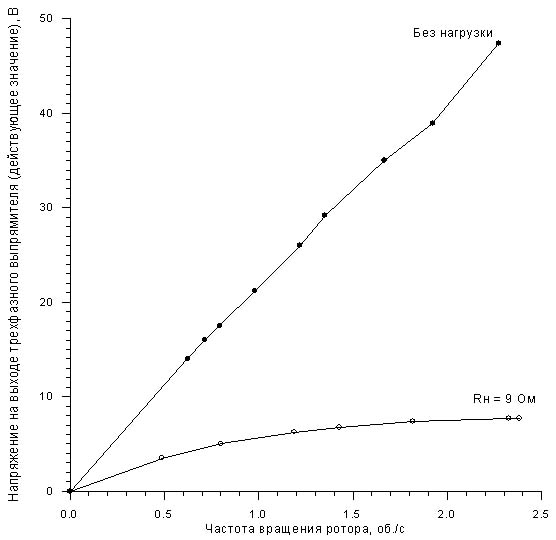
Рис. 5.6. Зависимость действующего значения выпрямленного выходного напряжения трехфазного электрогенератора от частоты вращения ротора без нагрузки и с нагрузкой.
Выходное напряжение генератора без нагрузки растет примерно линейно с увеличением частоты вращения. При работе генератора на нагрузку выходное напряжение генератора при увеличении частоты вращения ротора достигает некоторого максимального значения, при котором действующее значение выходного тока через нагрузку равно примерно 0.95 А, т. е. генератор переходит в режим источника тока (рис. 5.7). Этот максимум достижимого напряжения зависит от сопротивления нагрузки (чем меньше сопротивление нагрузки, тем меньше максимально достижимое с ростом частоты вращения ротора выходное напряжение).
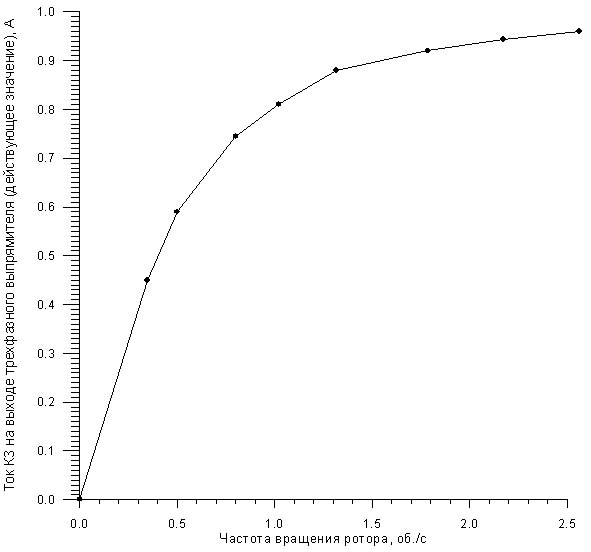
Рис. 5.7. Зависимость действующего значения тока на выходе трехфазного выпрямителя от частоты вращения ротора трехфазного электрогенератора в режиме короткого замыкания.
Ниже на рис. 5.8, 5.9 показано выходное напряжение фаз электрогенератора, подключенного к трехфазному диодному мосту, при разных нагрузках и сходных частотах вращения ротора.
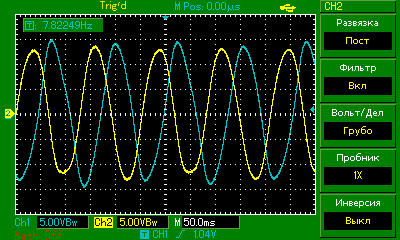
Рис. 5.8. Выходное напряжение холостого хода двух фаз трехфазного электрогенератора (три фазы соединены звездой и подключены к трехфазному диодному мосту без нагрузки). Частота выходного напряжения примерно 7.84 Гц. Частота вращения ротора примерно 0.98 об./с.
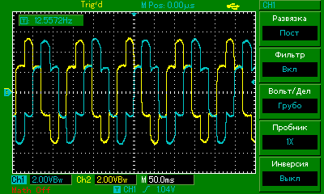
Рис. 5.9. Выходное напряжение двух фаз трехфазного электрогенератора при подключении трех фаз звездой к трехфазному диодному мосту с нагрузкой 9 Ом. Частота выходного напряжения примерно 8 Гц, частота вращения ротора примерно 1 об./с.
Изготовленный трехфазный электрогенератор обладает обратимостью, т. е. может использоваться в качестве электрического двигателя при подаче на его обмотки трехфазной управляющей последовательности импульсов напряжений [9].
Ссылки:
12.12.2018
20.12.2018
Альтернативные источники энергии
Компьютеры и
Интернет
Магнитные поля
Механотронные системы
Перспективные
разработки
Электроника и
технология